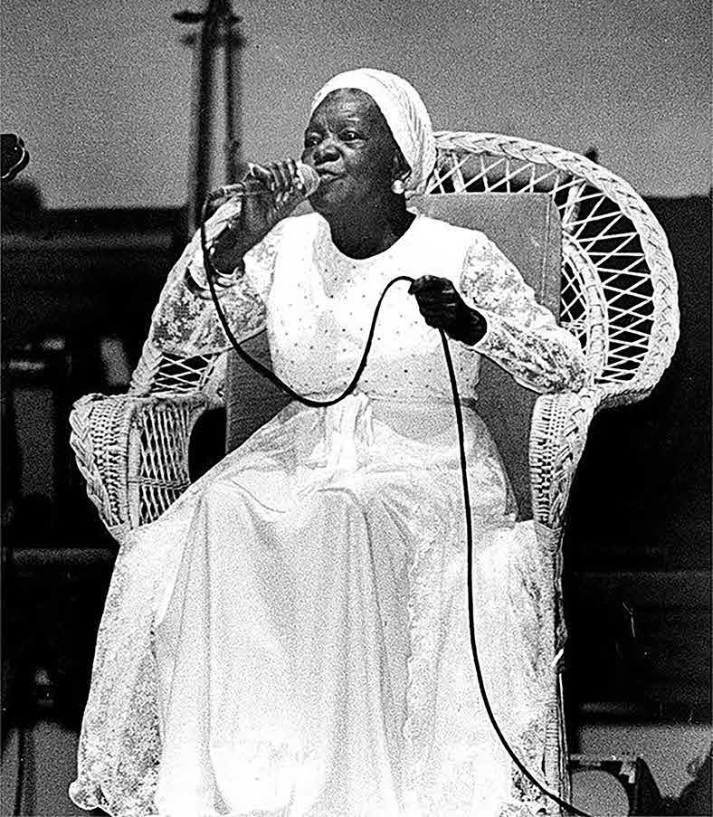

Sugira uma roda de conversa.
Destaque com os estudantes as mulheres que trabalham e estudam na escola.
Contextualize a questão histórica de ser professora.
Pergunte se a história de vida compartilhada anteriormente pelos estudantes impactou os demais; se há alguma mulher na escola que admiram e qual o motivo.
Em seguida, solicite que anotem, no caderno, o nome de quatro mulheres da escola (educadoras, funcionárias ou estudantes) que admiram por algum motivo (empatia, experiência de vida inspiradora, inteligência, generosidade, importância de seu trabalho para a sociedade, entre outros).
Se possível, pesquise, com os estudantes, em sites na internet a respeito dessas personalidades, ressaltando as informações principais sobre elas.
Por exemplo, Carolina Maria de Jesus foi uma mulher negra, de origem muito pobre, que utilizou a escrita para se expressar e contar sua história no livro Quarto de despejo: diário de uma favelada.
Para a pesquisa, sugerimos: organizar as personalidades em duplas para a realização da pesquisa.
Solicitar que os estudantes façam durante a aula, pois, muitas vezes, eles não têm tempo e/ou recursos disponíveis para realizá-la em casa.